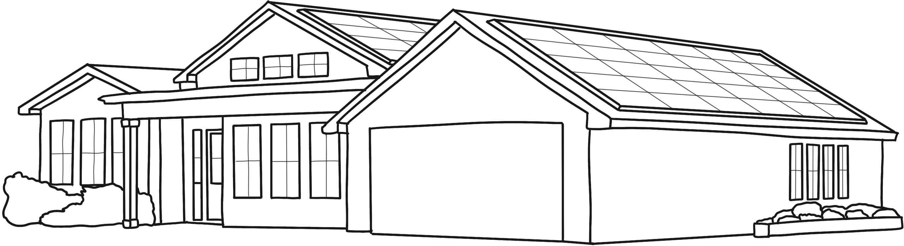

Solar energy is a form of renewable energy that is available without any limit and can be used for our need. Solar energy cannot be destroyed. It doesn’t pollute or affect any other things. But is using this kind of energy really as harmless as it sounds?
Overview
Tesla solar panel system is made up of three basic parts: solar panels, an inverter and a solar gateway. Solar panels capture the sunlight hitting the roof and convert it into electricity. A solar inverter connected to solar panels converts this electricity into the clean energy that can power the lights and appliances in your home. The solar energy powering your home decreases the amount of energy you need to draw from the grid, lowering your electricity bill. Solar gateway captures system’s information and allows users to monitor the energy production through the Tesla app.
At night, the solar system will turn off and a house will be powered by the electric grid. During this time, the electric utility’s meter will record how much energy the home is using, as it does today. Alternatively, Tesla offers Powerwall to store the excess solar a home generates and use this energy at night, which would enable you to achieve a self-powered home.
When the sun is shining, the power that is generated by the solar system on your roof will flow into your home’s electric panel. As your system generates more power than your home can immediately consume, your electric meter will reflect as such. Some utility meters will stand still, while bidirectional meters will spin backwards when solar energy is powering your home. Your electric bill will show zero usage during that time. During a sunny summer day, your solar panels may produce more power than your home needs. At that time, your solar system will be fully powering your home and all the excess power will flow backward through your electric meter, where it will be consumed by other houses and businesses connected to the grid.
Tesla’s propriety mounting system allows the panels to sit low on your roof with minimal gaps between panels. Their solar systems are designed to blend in with your roof using all-black panels and integrated side skirts that conceal edges and protect your system from debris.
There are three types of solar panels:
| Monocrystalline | Polycrystalline | Thin-film |
|---|---|---|
|
Monocrystalline solar panels are made from a single-crystal silicon, which is the purest form of silicon. This type of solar panel is the most efficient and expensive type of solar panel. |
Polycrystalline solar panels are made from a multi-crystal silicon, which is a less pure form of silicon than monocrystalline solar panels. This type of solar panel is less efficient and less expensive than monocrystalline solar panels. |
Thin-film solar panels are made from a semiconductor material that is deposited on a substrate. This type of solar panel is the least efficient and least expensive type of solar panel. |
Table: Types of solar panels
Benefits
One of the biggest benefits of a Tesla solar panel system is its aesthetic appeal. Typical solar installations include skirting in an effort to hide all solar panel mounting hardware from the ground view, ensuring seamless integration into the roofing material. Tesla’s panels are also black in appearance, which ensures the panels are as aesthetically pleasing as possible.
Other benefits from going solar include:
Savings
Homes with solar panels rely less on the grid by capturing energy directly from the sun. Homeowners can offset their energy usage with solar panels and reduce their energy bills. By installing a solar panel system, you can take control of your energy usage and lower your costs.
Protect Yourself from Rising Electricity Rate
Electricity rates continue to increase over time - since 1970 the price of electricity has increased over 3% per year on average. In contrast, energy from your solar system has a fixed price. With solar, you won’t have to worry about how the price of your electricity will change in the future.
Reduce Your Carbon Footprint
Electricity from the grid is generated by a mix of coal, natural gas, nuclear and some renewable energy depending on where you live. Solar gives you a choice in where your energy comes from. By switching to solar, you will be reducing your carbon emissions and environmental impact of energy use.
Secure Your Home from Outages
While solar alone does not function during a power outage, pairing your solar panels with a Powerwall allows you to recharge with sunlight and keep your appliances running even when the grid goes down. Tesla Powerwall is designed to integrate with solar panels and can store energy generated during the day, for use at night or during unexpected outages and grid shut-offs.
Warranty
25-Year Panel Performance Warranty
Your solar panels are guaranteed by their manufacturer to at least 80% of nameplate power capacity for at least 25 years. At your request, Tesla will process your claim and perform any related labor at their cost.
10-Year Comprehensive Warranty
Your entire Tesla solar system is covered by a 10-year comprehensive warranty. For a period of at least 10 years, at your request Tesla, will process your claim and perform any related labor at our cost. This includes the following aspects of your solar system:
- Powerwall
- Solar inverter
- Roof mounting and leaks
Solar Panel Specs
- Wattage:
- Operating Temperature:
- Dimensions:
- Design:
- Inverter Power:
- Inverter Dimensions:
- 400 W
- -40°F up to +185°F
- 74.4" x 41.2" x 1.57" (including frame)
- Black anodized aluminum alloy frame
- Black solar cells and backsheet
- 3.8kW / 7.6kW
- 97.5% efficiency
- Inverter Dimensions:
Manufacturing Process
Step 1:
Solar cells are made with crystalline silicon that is melted and mixed with gallium or boron to form wafers called silicon ingot. Phosphorous is then added to the silicon, and along with the gallium or boron, these substances give silicon its electrical capability. The silicon ingot is then cut into thin sheets and an anti-reflective coating is applied to capture the sunlight instead of reflecting it away from the panels. Thin lines are then cut into the cells to capture and move the electrical current within the cell.
The solar cells become semiconductors of electricity which is generated by the photovoltaic effect, when the sunlight's photons are absorbed, electrons then drift within the solar cells to create energy.
Step 2:
Solder solar cells together to form one panel, usually 60 or 72 solar cells form one panel.
Step 3:
Install the backsheet which protects the bottom of the solar cells.
Step 4:
Install glass front. This allows light to filter through to the solar cells and provides a protective layer.
Step 5:
Seal a metal frame around the panel with silicon to fuse all of the layers together.
Step 6:
Install the junction box which protects the solar panel's electrical wires from damage
Step 7:
Test solar panel for quality and strength before shipping out for use. The main types of solar panels are monocrystalline, polycrystalline, and thin-film panels.
| Materials | End Uses |
|---|---|
|
Steel |
Racking components, rebar |
|
Aluminum |
Frame, cell paste, wring/ cabling, rooftop racking |
|
Silicon |
Wafers, glass |
|
Cooper |
Wiring/cabling, electronic components |
|
Silver |
Silver past, electronic components |
|
Glass |
Cover glass |
|
Plastics |
Backsheet, encapsulant, conduit, cable insulation, connectors, juncton box, adhesives, electronic |
|
Cement |
Support pads, foundations |
|
Acids, gases |
Cell processing, metal refining, plastics |
Table: Common materials in PV systems and their end uses
Tesla's Partnership
Until recently, Tesla had a partnership with international electronics giant Panasonic to create Tesla solar panels. The partnership was based around using the highly-regarded Panasonic HIT cells to create Tesla’s solar panels.
After Panasonic’s departure from solar cell production for Tesla, we understand that Tesla no longer manufactures its solar panels. Instead, it appears to be using third-party manufacturers to source solar panels for installation jobs.
With Panasonic out of the picture, Tesla first switched to using solar panels from Qcells. Then in April 2021, Tesla announced the launch of its own solar panel, the Tesla T420S. Since then, homeowners getting solar panels from Tesla have been offered either Tesla-branded solar panels or solar panels from Qcells.
Labor Cost
As of 2011, manufacturers in China accounted for 63 percent of all solar-panel production worldwide. But a detailed analysis of all costs associated with PV production shows that the main contributors to that country’s lower PV prices are economies of scale and well-developed supply chains — not cheap labor.
While China does indeed have a small advantage in labor costs, it has relatively little impact on prices because solar-panel manufacturing is highly automated. The lower cost of labor in China provides an advantage of 7 cents per watt, relative to a factory in the United States, but that amount is countered by other country-specific factors, such as higher inflation.
Supply Chain
As of 2021, China possessed 72% of the world’s polysilicon manufacturing capacity, 98% of ingots, 97% of wafers, 81% of cells, and 77% of modules. 75% of the silicon solar cells incorporated into modules installed in the United States are produced by Chinese subsidiaries operating in three Southeast Asian countries: Vietnam, Malaysia, and Thailand.
The two largest tracker vendors were the U.S. firms NEXTracker and Array Technologies, collectively representing 70% of 2020 U.S. tracker shipments, and 46% of 2020 global tracker shipments. Globally, in 2020, 66% of PV inverters were manufactured by companies headquartered in China. However, the U.S. market relied more on inverters from companies headquartered in Europe and Japan.
Drawbacks
Recycling
What happens when solar panels break or are decommissioned? Although solar panel recycling has not become a major issue yet, it will in the coming years as solar panels need to be replaced. Currently, solar modules can be disposed of with other standard e-waste. Countries without robust e-waste disposal means are at a higher risk of recycling related issues.
Chemicals
To produce solar-grade silicon, semi-conductor processing typically involves hazardous chemicals. Depending on the solar panel manufacturer and country of origin, these chemicals may or may not be disposed of properly. Unfortunately, there are companies that try to cut corners to save cash. Not every company avoids dumping chemicals or recycles their byproducts properly.
Energy Demand
Solar requires a significant amount of energy up front to produce. Mining, manufacturing, and transportation all require substantial amounts of energy. Quartz must be processed, cleaned, and then manufactured with other components which may come from different facilities to produce a single solar module. Heating the quartz during the processing stage requires very high heat. Manufacturing requires combining multiple materials with incredible precision to create high-efficiency panels. All of this requires lots of up-front energy. With traditional fuels such as gas or coal, they are extracted, cleaned or processed, and burned at very large scales, typically in a single location.
Recycling
Waste from end-of-life solar panels presents opportunities to recover valuable materials and create jobs through recycling. According to the International Renewable Energy Agency, by 2030, the cumulative value of recoverable raw materials from end-of-life panels globally will be about $450 million, which is equivalent to the cost of raw materials currently needed to produce about 60 million new panels. Diverting solar panels from landfills to recycling saves space in landfills in addition to capturing the value of the raw materials.
Crystalline-silicon solar technology represents most of the solar panel market share. This type of panel is constructed with an aluminum frame, glass, copper wire, polymer layers and a backsheet, silicon solar cells, and a plastic junction box. The polymer layers seal the panel from exposure to weather but can make recycling and panel disassembling difficult, as high temperatures are often required to loosen the adhesive.
Many of these components can be recycled. Glass composes most of the weight of a solar panel (about 75 percent), and glass recycling is already a well-established industry. Other materials that are easily recyclable include the aluminum frame, copper wire, and plastic junction box.
Other materials located within the solar cells may be more difficult to recycle. Silver and internal copper are valuable components, but panels typically contain very small amounts of these materials. Toxic metals like lead and cadmium may also be present in solar panels.
Another way to keep solar panels out of landfills is through panel reuse, either by direct reuse or after refurbishment. When reused, solar panels get a second life generating clean energy at a different location. The secondary market has not yet gained traction in the United States, and regulatory considerations include electrical grid interconnection regulations, and fire, building, and electrical codes that must be examined when planning for solar panel reuse. However, there are many beneficial ways solar panels could be reused in situations where they aren’t connected to the electrical grid, including electric bike or vehicle charging stations, or other remote locations.
When solar panels do reach their end of their life today, they face a few possible fates. Under E.U. law, producers are required to ensure their solar panels are recycled properly. In Japan, India, and Australia, recycling requirements are in the works. In the United States, it’s the Wild West: with the exception of a state law in Washington, the U.S. has no solar recycling mandates whatsoever. Only 5 US states – California, Hawaii, New Jersey, North Carolina, Washington – have enacted laws, regulations, and policies impacting solar panel waste. Voluntary, industry-led recycling efforts are limited in scope. “Right now, we’re pretty confident the number is around 10 percent of solar panels recycled,” said Sam Vanderhoof, the CEO of Recycle PV Solar, one of the only U.S. companies dedicated to PV recycling. The rest, he says, go to landfills or are exported overseas for reuse in developing countries with weak environmental protections.
US states with recycling law, regulations, and policies.
Vanderhoof says that the cost of recycling that panel in the U.S. is anywhere between $12 and $25 — after transportation costs, which “oftentimes equal the cost to recycle.” At the same time, in states that allow it, it typically costs less than a dollar to dump a solar panel in a solid waste landfill.
Does the clean energy generated from solar panels offset the negative impacts during the mining and manufacturing process?
Emission intensity is the lifetime (total) carbon emissions evaluated per unit of energy. This is shown by grams of carbon dioxide equivalent per kilowatt-hour (gC02e/kWh) or an equivalent value, tons of carbon dioxide equivalent per megawatt-hour (tC02/MWh). The lower the emission intensity, the better the environmental impact, as less CO2 is emitted to generate the same amount of energy. While there are no global warming emissions associated with generating electricity from solar energy, there are emissions associated with other stages of the solar life-cycle, including manufacturing, materials transportation, installation, maintenance, and decommissioning and dismantlement. Solar panels require approximately 60% to 70% of their energy upfront, approximately 25% during operation and approximately 5% to 20% following their productive life. Coal on the other hand generated ~98% of its emissions during the operation process (mining, transportation, combustion, etc.) and only 1% during upstream and downstream processes. The life cycle emission intensity of solar PV is approximately 40 gC02/kWh. The life cycle emission intensity of coal is approximately 1,000 gC02/kWh. Even the worst estimates for solar PV are still 3x better than the best estimates for coal.
Conclusion
Solar power is not entirely green, but it doesn't mean we should turn our backs on it. Its benefits are way too great for that. Instead, we should openly address its problems and figure out how we can fix them. Giving a second life to all solar panel components would not only reduce the amount of waste ending up in landfills but also shrink the demand for new materials. Besides boosting in its early days, new recycling technology could improve the recovery of PV modules’ precious materials such as silicon and silver. Although optimizing solar panels recycling may take a while, It’s just a matter of time. What’s exciting is that, once the kinks are worked out, this could lead to huge market opportunities. It could be a win for the economy and the environment if we start acting right now.